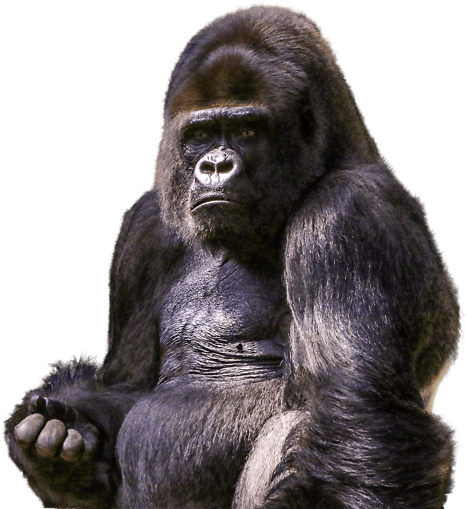
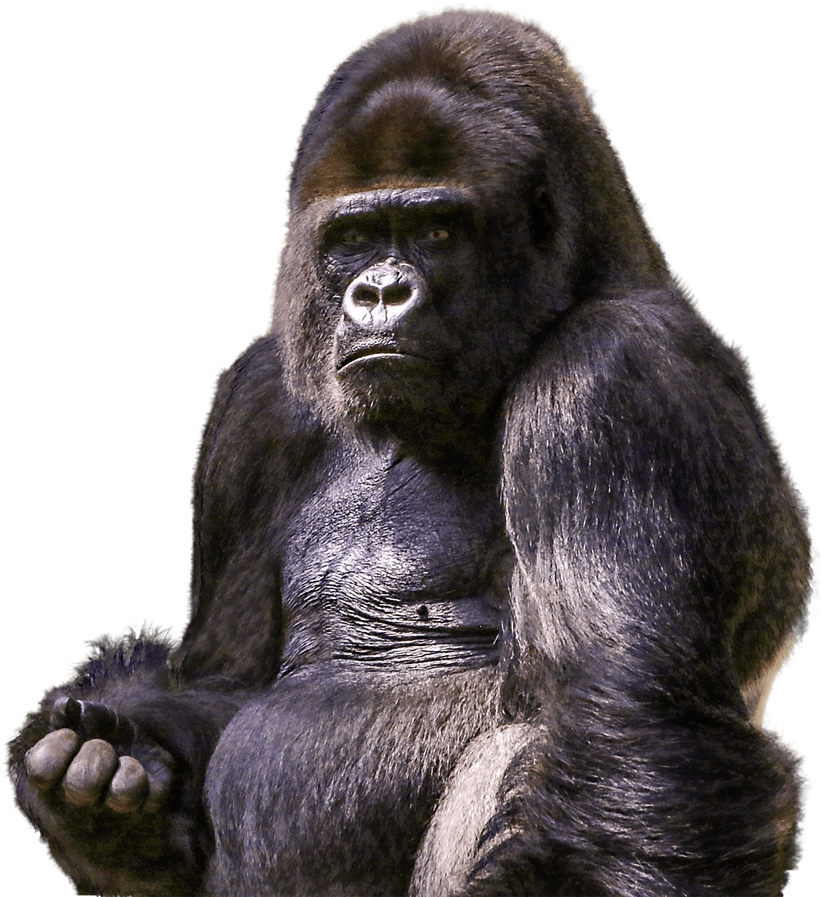

Mountain Gorilla
Gorilla beringei beringei
As their name implies, mountain gorillas live in forests high in the mountains, at elevations of 8,000 to 13,000 feet. They have thicker fur, and more of it, compared to other great apes. The fur helps them to survive in a habitat where temperatures often drop below freezing. But as humans have moved more and more into the gorillas’ territory, the gorillas have been pushed farther up into the mountains for longer periods, forcing them to endure dangerous and sometimes deadly conditions.
What might have been a bleak outlook for the subspecies just a couple of decades ago has brightened in recent years due to conservation efforts. Despite ongoing civil conflict, poaching and an encroaching human population, both populations of mountain gorillas have increased in numbers
 



STATUS:
ENDANGERED
POPULATION:
About 1,000
HABITAT:
Forest Habitats, Mountains
THREATS
HABITAT LOSS & FRAGMENTATION
The primary threat to mountain gorillas is from the clearance and degradation of their native afromontane forest home. As the region’s growing human population struggles to eke out a living, they encroach on the park system for its land and resources. Conversion of land for agriculture and competition for limited natural resources such as firewood lead to varying degrees of deforestation. Preserving the mountain gorilla’s forest habitat requires developing sustainable alternatives and investing in new economic activities that allow people to meet their daily needs. Tourism in particular boosts the local economy and encourages locals to see gorillas not as competitors but as a means of improving their own situation. Past threats of mining and oil exploration in the area have abated thanks to advocacy work. You can help prevent the risk of future resource exploitation by sharing the story of the mountain gorillas.
POACHING
In the first two decades after the discovery of mountain gorillas, European and American scientists and trophy hunters killed over fifty of them. In the 1960s and 1970s, gorillas were poached for sale to foreigners as trophies and captive specimens. None survived in captivity. Recent events have shown that hunting commissioned by unscrupulous dealers in order to capture mountain gorilla babies remains a very real threat. Tragic incidents of direct poaching, either the killing of mountain gorillas or capture of infants for the live animal trade, occurred throughout the mountain gorilla range in 2002, 2004, 2007. In 2007, an entire family of mountain gorillas was killed by locals, a political act aimed at forcing the park open to resource exploitation. Orphans from this family were rescued and cared for at the Senkwenkwe facility in Rumangabo. In 2013, they were joined by Matabishi, an infant recovered outside of Virunga National Park, abandoned in a field with clear signs of being held captive. While the poaching of mountain gorillas for food is extremely rare, unselective hunting with snares (set to catch antelopes, bush pigs, and other wildlife) kills or injures mountain gorillas. And to this day poaching continues to jeopardize the mountain gorillas’ survival. Just this year, four poachers were arrested in the Southern Sector of Bwindi Impenetrable National Park following the death of a gorilla known as Rafiki, the Silverback of the famous Nkuringo group.

How Can I Help?

Call Your Representatives
100 companies are responsible for 71% of global emissions. Urge your congresspeople to pass legislation preventing corporations from destroying our planet.

Reduce Your Footprint
Commit to reducing food waste, electricity use, and walk, bike, or take public transportation. Buy only what you need and recycle what you no longer do.

Donate
Companies like IUCN Red List & World Wildlife Fund are committed to protecting habitats threatened by Climate Change and the animals that live there.